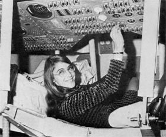

Hello Mentor, Please find the solution of the first day assignment.
Hope I have done it right, Thanks!
#1. female computer scientists who changed the world, the six ‘ENIAC Women’, Fran Bilas, Jean Bartik, Ruth Lichterman, Kay McNulty, Betty Snyder, and Marlyn Wescoff, programmed the first all-electronic, programmable computer, the ENIAC (Electronic Numerical Integrator and Computer).
#2. Rear Admiral Dr Grace Murray Hopper was one of the most influential computer scientists of all time, famous for her ground-breaking work in developing the first accessible computer programming languages written in English. Hopper was noted for her curiosity since early childhood, having been caught by her mother dismantling seven alarm clocks to see how they worked (she was limited to one afterwards). She first studied at Vassar College, a liberal arts college, before completing her master’s and PhD in mathematics at Yale University, graduating in 1934.
#3. Margaret Hamilton is one of the first computer software programmers, and is credited with coining the term ‘software engineering’ to describe her work at MIT’s Instrumentation Laboratory. Hamilton, who studied mathematics at the University of Michigan and Earlham College, graduated in 1958 and first worked as a high school math teacher before joining MIT to work on software to predict the weather. In 1961 Hamilton joined the Lincoln Laboratory at MIT, working on the Semi-Automatic Ground Environment (SAGE) project, the very first US air defense system, in which she created software to help search for unfriendly aircraft. Her efforts in this project led her to joining the Instrumentation Laboratory, where she led a team credited with developing the in-flight software for the Apollo space program, with Hamilton personally focusing on programming software to detect system errors and recover information in the event of a computer crash. Working at a time when software engineering courses simply didn’t exist, Hamilton and her team had to fix problems on their own, and her work was crucial in making the first moon landing, Apollo 11, possible in 1969. 
#4. Clarke studied at the University of Cambridge in 1936, achieving a double first degree in mathematics, although she was prevented from receiving a full degree as Cambridge only awarded these to men until 1948. One of her professors at Cambridge noted her mathematical ability and recruited her to the Government Code and Cypher School (GCCS) at Bletchley Park, where she initially undertook clerical work, earning far less than her male counterparts. However, her talents soon shone through and she was promoted to Linguist grade in recognition for her hard work, as there were no protocols in place for a senior female cryptanalyst (despite not knowing another language – much to Clarke’s enjoyment when she filled forms in with ‘grade: linguist, languages: none’).
#5. Starting with Sue Black’s own example, Dame Stephanie ‘Steve’ Shirley arrived in the UK as a child refugee of the Kindertransport in 1939 and went on to found her own software company, Freelance Programmers, in 1962. She adopted the name ‘Steve’ to help her in the male-dominated business world, having found that company letters using her real name were not responded to.
#6. Listen the code anthem by Nirajan Timalsina from Nepal. :D
#7. Charles babbage differemtial engine
#8. Wonder woman trailer :D
Thanks!
-Ujjwal